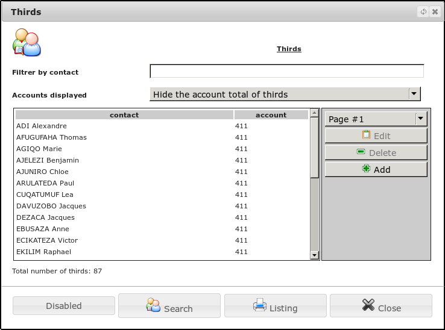
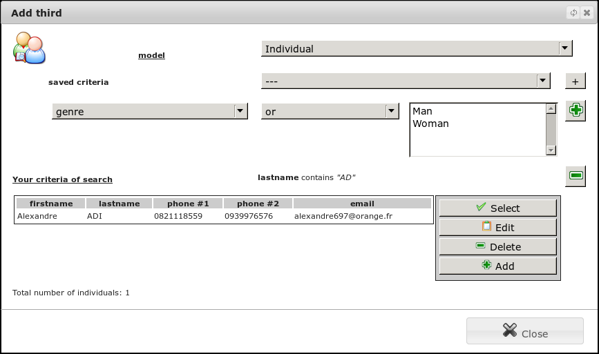
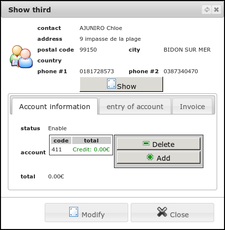
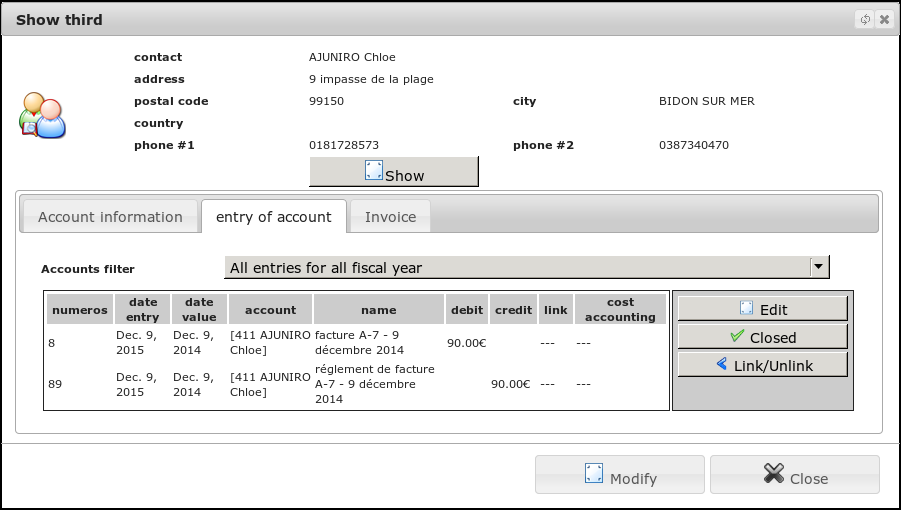

Third book¶
Creating third¶
Let us in the menu Financial/Third.

The list of third previously recorded appears. You can make a number of quick fitrage following the name or the situation. You can then print the list. To add a new third party, you must first select a contact (physical or moral) associated with this third book.

From this screen, you can also create a new contact before selecting.

Each third party, you can associate accountants corresponding to the nature of your third: supplier, customer, employee and member. You can change these accounts to charge your accounting the way you want the person in financial transactions.
Location of third¶
The third sheet allows you to have a global view of the statement of revenue and expenses related to the third party.

You will find here all accounting entries exercise related to the third party. There is also a summary of debits and credits to a single glance whether there are any unpaid debts. With other financial modules, you can also view related operations.